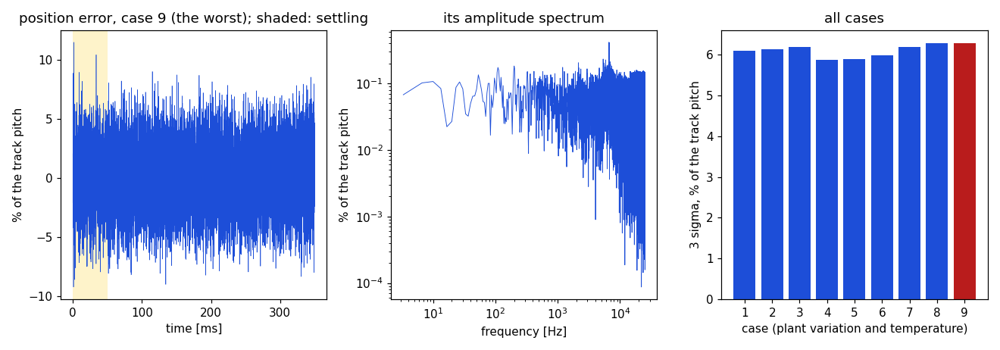

hdd-track-follow-margins
Hard disk drive, dual-stage head positioning · solved 6 of 6 agent attempts pass
more
The IEEJ/Atsumi HDD benchmark: a 48-state dual-input single-output plant (VCM rigid body plus 15 resonances, PZT with 8) sampled at 50.4 kHz with two actuator updates per sample, nine plant cases (three temperatures x three PZT gains) visited in a hidden order, each with its own realisation of rotational vibration, fan-induced vibration and repeatable run-out; the controller sees the position error signal only and 3-sigma of the head position is evaluated between the samples, over 0.3 s per case (159 thousand controller calls per seed, each a round trip to the controller's own process). The grader perturbs one PES sample in rollouts the controller cannot tell from graded ones and rejects loops that are not linear time-invariant. A minimum-variance LQG on the nominal case clears the time-domain gate at 0.41 x the incumbent level and fails all three margins (4.3 dB, 24.5 deg, 9.8 dB); a design has to trade accuracy for robustness on nine plants at once, by loop shaping or by detuning the estimator (the LQG with the run-out variance inflated 50-fold passes at 0.68 x).
Gate. per-seed success is the `match` rung of this benchmark's ladder ['stable', 'match', 'beat5', 'beat10', 'beat25', 'beat50'] (`--success-mode match`), not the evaluator's default flag; the task is solved when the success rate over the grader's held-out seeds is `>= 0.9`; the structured check `loop-margins` is reported as the last rung and must pass as well (`--require-certificate`)
Axes: plant:hdd, scenario:track_follow_v0, gate:match, certificate:loop-margins, incumbent:benchmark-example-controller, cases:nine-hidden, domain:frequency
Each video or figure re-runs the attempt's final controller through the task's own evaluator on a public seed (never the grader's held-out ones). The table under each one is the official grade on the held-out seeds.


track_follow_v0| criterion | graded | needed |
|---|---|---|
| base:match | 1.000 | ≥ 0.900 |
| certificate | 1.000 | ≥ 1.000 |
The agent's final message
`/app/work/controller.py` now passes the gate and every rung of the ladder on the visible seeds, and the loop-margins certificate passes on all nine cases. | Check (task's evaluator) | Result | Requirement | | --- | --- | --- | | Worst-case 3σ, seeds 0–14 | 6.29–6.44 % of track pitch | ≤ 15.09 % (`match`), ≤ 7.395 % (`beat50`) | | Gain margin, worst case | 8.18 dB | ≥ 6 dB | | Phase margin, worst case | 39.5° | ≥ 30° | | Sensitivity peak, worst case | 4.51 dB | ≤ 6.5 dB | | Largest PZT displacement | 17.5 nm | < 50 nm | | Controller CPU per rollout | about 0.44 s | ≤ 1.5 s | The certificate figures were identical with seed 0 and seed 5 as the first seed. The final file was run through the exact command from the task (seeds 0–4); seeds 5–14 were run on the same control law before a last change that left its outputs bit-for-bit the same. The controller is a single fixed linear controller (169 states) for all nine cases: a multi-rate LQG design computed at import from the benchmark's own plant and disturbance models. It has four gains, explained in the docstring: - **`R_VCM`, `R_PZT`**: command penalties. - **`RHO`**: the bandwidth knob (how much the Kalman filter distrusts the PES). - **`BETA`**: penalises command energy where a resonance would sit at the other temperatures. Without it the first design failed the certificate on phase margin (28.7° in case 7). Two things to know: - **Phase margin is below the incumbent's.** It clears the 30° minimum by 9.5°, but the incumb…
Shown: public seed 0 (track_follow_v0); this episode passes the match rung. This episode: sigma3_worst_pct 6.29, ratio_to_incumbent 0.425, worst_case 9, pzt_max_nm 16.7, cases_completed 9, first_failed_case 0, failed_case_steps 0, total_reward -6.29. The plant variation with the largest error of this attempt, run again: position error, its spectrum, and 3 sigma on all nine cases.
controller.py · trial hdd-track-follow-margins__qQZp6Ez